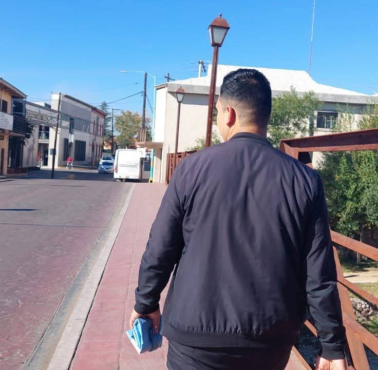
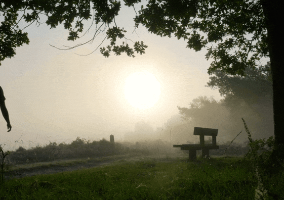
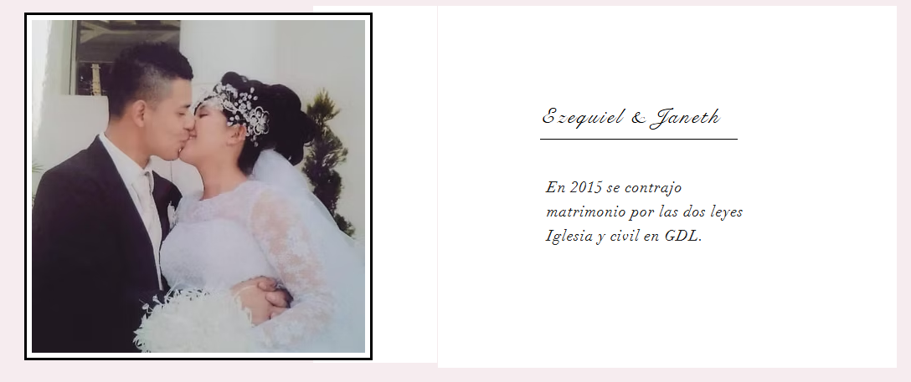

¿Quién soy?
Nací el 10 de mayo de 1997. Me considero una persona apasionada por la tecnología, con una gran curiosidad por entender cómo funcionan los sistemas y el software que mueven al mundo. Me gusta enfrentar nuevos retos individuales, tambien puedo trabajar en equipo para resolver problemas complejos.
Actualmente, soy una persona que estudia y trabaja; saco adelante a mi familia y estoy creando un patrimonio para tener una buena vida... Pero, aparte de mí, hay mucho que contar; todos sabemos que cada persona tiene una historia que contar...
Una parte de mi
Originario de GDL. Jalisco (Bethel) Me describo con una sola palabra:
RESILIENCIA...
Esta palabra Deriva un significado Como la capacidad que posee la persona para hacer frente a sus propios problemas; Superar los obstáculos y no ceder a la presión, independientemente de la situación. Referencia: Significados, Equipo (15/01/2024). "Resiliencia". En: Significados.com. Disponible en:
Una breve descripción:
Mi educacion basica fue en GDL.
Soy egresado de la Escuela Jesús Romero Flores en GDL y de la secundaria mixta 31 en el año 2013.
También empecé a estudiar la educación media superior en IEHP semiescolarizada y, aunque no terminé por la economía, terminé siendo egresado de Prepa Línea SEP 2022 al 2024.
Mi educación profesional fue en Guanajuato. En la UVEG, que a esta fecha de mayo 2026 estoy por empezar mis practicas, esperando próximamente mi título...
"El noventa por ciento de todos los que fallan no están realmente dotados; sencillamente se dan por vencidos".
(Paul J. Meyer.)

Trabajos:
A la edad de 12 años fui pespuntador completo que fue mi primer oficio en Guadalajara Jal.
A la edad de 17 años puse mi primer puesto de comida, borrego y pollo a la leña...
Tengo conocimiento en la cocina y panadería, lo aprendi en Ojinaga Chihuahua
Ala edad de 20 años aprendi el conocimiento de Electricista como, instalador de cableado, iluminación y otros componentes eléctricos; lo aprendi en H. Parral chihuaha. Ala edad de 21 años también tube que ser Tablaroquero... instalación de plafones, paredes, muebles y revestimientos con paneles de tablaroca. lo Aprendi en GDL.
Edad de 23 años trabaje el marmol y la cantera, con esto aprendi su funcionamiento y la destacada manera de colocarlo en diferentes partes de un Hogar. lO Aprendi en Aguascalientes. mex.
Sin duda mis aprendisajes me an dejado muchas grandes experiencias en la vida y mucho crecimiento...
LO MAS IMPORTANTE DE MI VIDA
